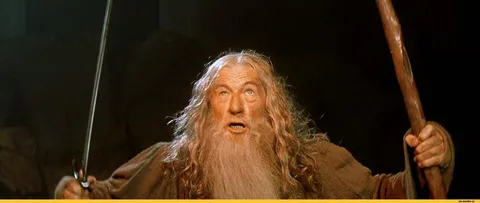

Еще один тип секций, который я начинаю проводить - это Senior Bar Raiser. Отличительная особенность таких секций - я не общаюсь с кандидатом. Задача SBR - вдумчиво отревювить все остальные секции и вынести свой авторитетный вердикт.
Я нанимаю людей уже лет 10. Провел порядка 400 технических секций и штук 300 финалов. Принял решение о найме пары сотен человек, о не-найме - и того больше. Годами вычитываю все секции всех людей в свою команду, да и в соседние тоже. И, кажется, научился неплохо видеть в них суть между строк. Интервьюверы обычных секций, зачастую, не имеют большого опыта и насмотренности, и могут ошибаться в вердиктах. Моя задача - собрать в голове целостную картинку о кандидате.
Тип секций Bar raising помогает повысить объективность оценивания и скомпенсировать неопытность некоторых интервьюверов. Где-то можно снизить вес очевидно случайно проваленной секции (дали слишком лютую задачку, или она просто не зашла, хотя по прочим секциям скилл виден), а где-то, наоборот, не допустить откровенно компромиссный найм (при наличии ред-флагов, которые бар-рейзер видит с высоты своего опыта, или если все секции пройдены прям "на тоненького").
Приведу несколько примеров ред-флагов, которые может усмотреть бар-рейзер в анамнезе кандидата:
- джоб-хоппинг (частая смена мест работы, на каждом месте <~1 года)
- в прошлом году кандидат уже собеседовался и прошел все секции крайне слабо, а в этом - очень хорошо -> подозрительно
- человек уже трижды проходил цикл собесов и стабильно валит какой-то вид секций (например, архитектуру)
- в коде секций остались ошибки, не замеченные интервьювером (не то чтобы я всегда перепроверяю код, но по многим задачам вижу сходу)
- задачи решены в упрощенной формулировке или неоптимально (например, не-инлайн в задачах, где интересно проверить работу с памятью, строками, итераторами)
- даны слишком простые задачи, а вердикт необоснованно высокий, а также прочие огрехи выставления вердикта вроде ложной импликации
- переоценка сложности/значимости проектов из опыта (кандидат очень уж красиво продал что-то несущественное, а интервьювер купился)
- неумение внятно объяснять свое решение (будь то решение текущей задачи на секции с кодом, или выбор технологии в разговоре про опыт)
- расхождения опыта и навыков (например, по резюме писал на с++ последние 10 лет, а на кодовой секции плавает в синтаксисе, объясняя тем, что давно на плюсах не писал)
- множественные упоминания различных интервьюверов о нечитаемости кода, либо его неоптимальности, либо неумении отдебажить - в целом любой некритичный огрех, повторенный трижды на различных секциях - это уже тревожный сигнал
- сквозящяя через все секции поверхностность, хаотичность, неуверенность, непоследовательность, сумбурность
- расхождения опыта, секций и профиля поиска (например, опыт на шарпах, нанимаем на плюсы, а секции проходил на питоне - вот как по ним судить?)
- скорость роста и перспективы (если кандидат с 15-летним опытом едва тянет на мидла - есть сомнения, что он дорастет до сеньора)
- недостаточность сигналов (например, вообще никак не проверяли архитектуру у сеньора)
И многое другое.
В целом, ни один из них обычно не является поводом для отказа. Но если их собирается штук 5, это точно повод нехило задуматься.
А мы продолжаем повышать объективность и прозрачность процесса собеседования. И если прошлый пост про TDD не убедил вас попробовать свои силы, вот вам еще один знак. А вакансии, по-прежнему, тут.
